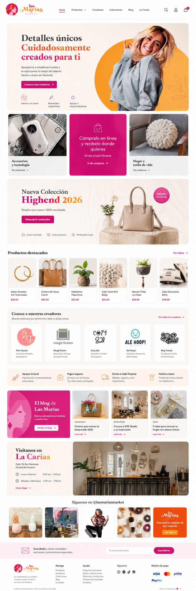
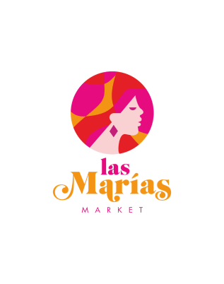

02 / Challenge
The question.
How can a market's personality translate into a useful, approachable online experience?
Case Study / 09
A brand-to-web exploration for a market shopping experience.

Las Marías Market / Selected visual01 / Context
Las Marías Market connects brand identity with a desktop website concept.
The available work brings identity and digital presentation together, letting the mark and webpage be seen as parts of the same system.
02 / Challenge
How can a market's personality translate into a useful, approachable online experience?
03 / Objectives
04 / Process
The logo and desktop web composition establish the visual foundation, showing how the identity carries into a shopping-oriented interface.
05 / Solution
A visual identity and website direction presented as one connected experience.
06 / Visual explorations
Original project imagery, presented without changes to the source assets.

07 / Results
A visual identity and website direction presented as one connected experience.
Case study in progress. Add real launch details, customer feedback and outcomes when verified.